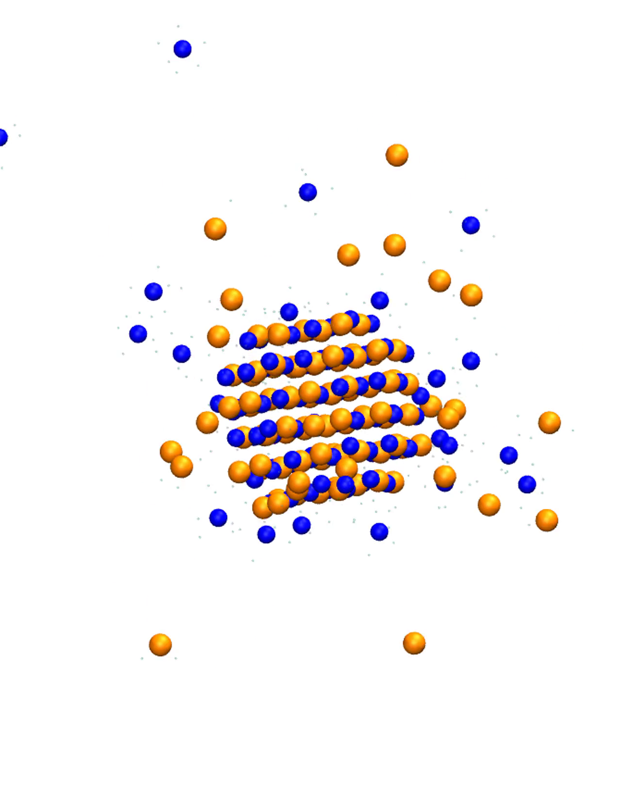

Water slab vaporization
An OpenMM water-slab example paired with an illustrative browser animation for communicating liquid-to-vapor molecular behavior and model limitations.
Selected work
Curated public examples spanning molecular simulation, scientific visualization, and reusable computational workflows.

01 · Molecular dynamics case study
An ordered nanoscale NaCl cluster is followed in explicit water for 1 ns at 300 K. Real trajectory media are paired with connected-cluster analysis to quantify progressive surface erosion.
02 · Scientific visualization
A secondary study focused on communicating phase-like molecular behavior while clearly separating illustrative visualization from trajectory evidence.
An OpenMM water-slab example paired with an illustrative browser animation for communicating liquid-to-vapor molecular behavior and model limitations.
03 · Scientific software
Public repositories with clear scope, documented assumptions, reproducible environments, and automated checks where appropriate.
Installable workflow for parsing Q-Chem TDDFT outputs, generating broadened spectra, detecting spectral regions, assigning states, and clustering representative structures.
GitHubResearch utilities spanning MOL2 processing, partial-charge comparison, PDB inspection, radial density, hydration-shell counts, and interfacial orientation analysis.
GitHubHelpers for generating and running staged AMBER workflows across minimization, restrained heating, equilibration, and GPU production dynamics.
GitHubAdditional research involving unpublished production trajectories, collaborator-owned data, or manuscript-sensitive material is intentionally not reproduced in this public portfolio.